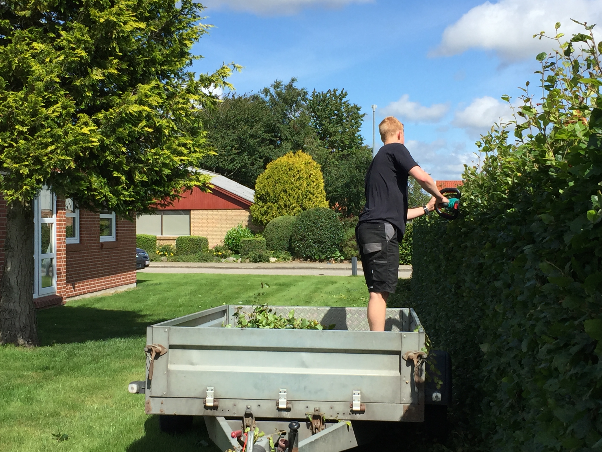

Fældning af træer
Uanset om du skal have fældet en hel række træer, eller taget et enkelt træ i din baghave, er du velkommen til at kontakte mig:
Udstyr:
Vi har benzin-drevne motorsave til de større opgaver og el-drevne til de mindre opgaver i by-området hvor støj-gene er en faktor, der skal tages hensyn til. Som udgangspunkt kan du forvente en pris fra 75,- pr meter træ. Dog varierer prisen meget da det kommer an på mange ting. Du kan også vælge at beholde træet, eller jeg kan tage det med.
Pris:
Fra 75,- pr meter træ.
FÆLDNING AF TRÆER
Fældning af træer. Fra mindre enkelte træer i baghaven, til flere tykke træer.

Fra 30,- pr løbende meter for enkeltsidet.
Hækkeklipning
Hækkeklipning af alle typer hække udføres.
Udstyr:
Til denne opgave bruges el-hækkeklippere, så du ikke skal tænke på at advare naboer på forhånd. Jeg kan også klippe din hæk længere ind, end en ”studsning”. Dette er dog mere krævende og kræver grensaks/motorsav – og derfor er prisen lidt højere. Jeg er fleksibel i forhold til oprydning af haveaffaldet. Skal jeg køre det væk for dig, er det ikke noget problem.
Pris:
Fra 30,- pr løbende meter for enkeltsidet.
Fra 50,- pr løbende meter for dobbeltsidet hæk.
Fra 100,- pr ved indklipning af hæk.
Evt. tillæg for oprydning.
HÆKKEKLIPNING
Alle typer hække klippes, enkelt eller dobbeltsidet.

Læhegnbeskæring
OBS – Denne service tilbydes KUN omkring 6870-6880 ØLGOD/LYNE området, og i en afstand på 15 km. Ring hvis du er i tvivl om du går under dette kriterie.
Udstyr:
Udstyret kan bruges til at beskære læhegn langs marker. Dette er en god ide for at fjerne store grene der hænger ud over marken som kan skade landbrugsmaskiner. Vi kan klippe tykke grene.
Pris:
850,- pr time
300,- pr time for oprydning.
BESKÆRING AF LÆHEGN
Beskæring af læhegn langs marker med stor hegnsklipper til traktor

Beskæring af buske og træer
Skal du have beskåret æbletræet, for at få plads imellem grenene, og dermed få den optimale høst. Eller have ryttet lidt ud i buskene. Så klarer jeg også den type opgaver. Jeg beskærer buske og mindre træer.
Udstyr:
Her bruges eldrevet-motorsav, grensakse og sakse/save med langt skaft for at nå de øverste grene.
Pris:
Fra 100,- pr busk og 200,- pr træ.
Varierer meget alt efter størrelse på buske og træer.
Ring, så finder vi en passende pris.
BESKÆRING AF BUSKE OG TRÆER
Beskæring af buske og træer

Klipning af græs
Jeg kan klippe din plæne en gang, eller bestilles til at klippe den kontinuerligt.
Udstyr:
Til denne opgave bruger jeg en Stiga Park plæneklipper med frontklipper. Dette gør at jeg kan komme
ud i alle kroge og hjørner. Så du ikke skal bekymre dig om "helligdage"
Græsset bliver slået i stykker, og det er ikke nødvendigt at rive sammen.
Der kan også tilbydes plejning af plænen i form af gødning og kalkning.
Pris:
Fra 1,- kroner pr. m2.
Afhænger af størrelse og type af plæne.
2,- pr. m2. for kalkning.
KLIPNING AF GRÆSPLÆNE
Klipning af din græsplæne, en gang eller jævnligt

Rensning af tagrender
Er dine tagrender fyldte med skidt og blade, så kan vandet ikke løbe ned i tagrenden, og du oplever
måske at vandet løber ud over tagrenden.
Jeg tømmer tagrenden for skidt og vasker tagrenden udvendigt for skidt og alger, så den er ren og pæn.
Udstyr:
Tagrenden bliver tømt for skidt fra en stige. Derfor tilbydes kun rens af tagrende ved stueetage.
Pris:
Fra 50,- pr løbende meter tagrende.
Evt. tillæg for oprydning.
TAGRENDE: RENS OG VASK
Rens af tagrende, og undenvendig vask.